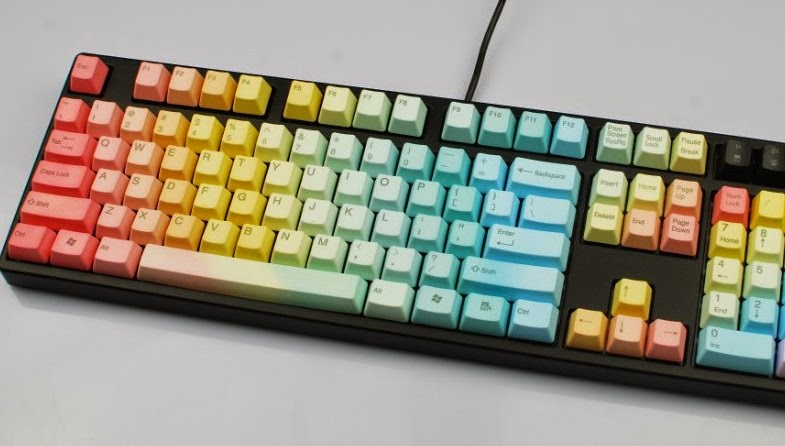
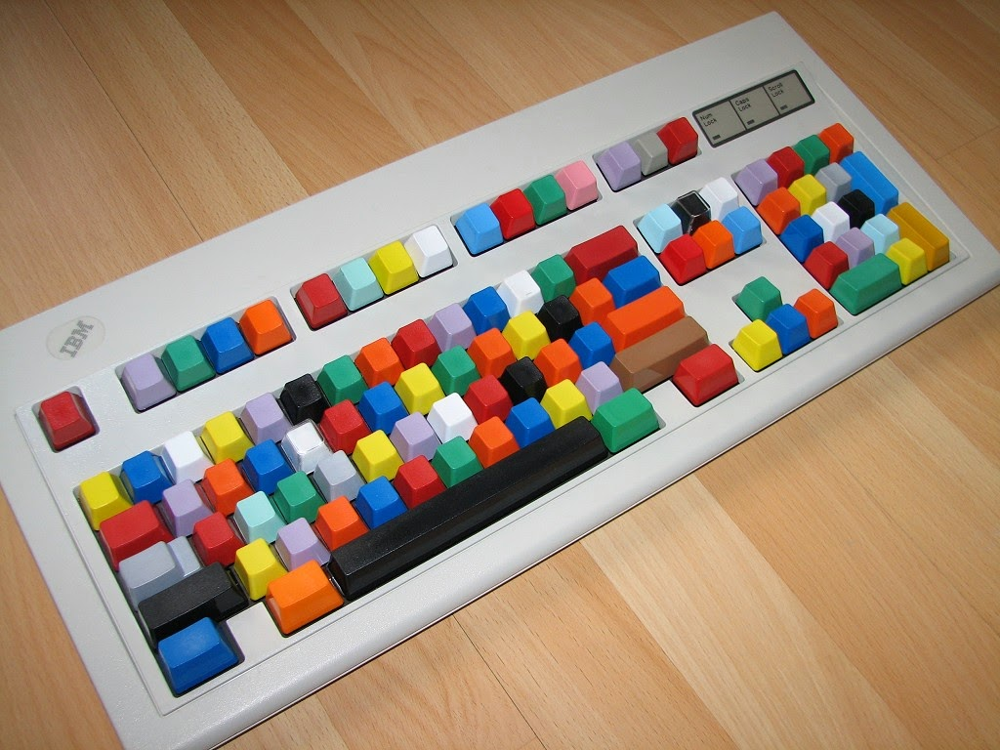
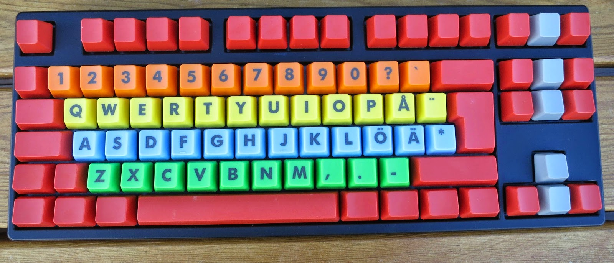
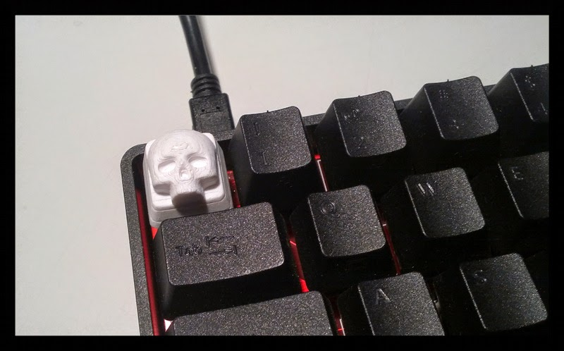
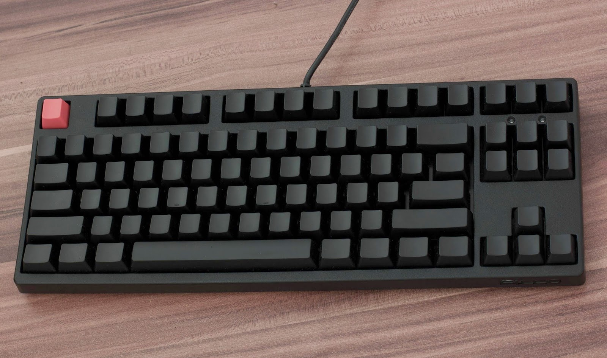

Cualquier persona que se dedique a actividades relacionadas con la informática (y hoy en día prácticamente cualquier persona independientemente de sus actividades) está plenamente consciente que su principal interfaz con una computadora es su teclado, y dada la cantidad de tiempo que lo usamos, más nos vale estas completamente cómodos con él.
Hay varias cosas que influyen en como lo usemos, y dependiendo de sus características podremos disfrutar más o menos al usarlo, veamos algunas cosas:
Distribución Ingles vs Español
Una de los parámetros más evidentes de un teclado es su distribución, cuantas personas de habla hispana han usado siempre una distribución ISO en español y han “sufrido” el tener que usar una distribución en inglés (principalmente en computadoras portátiles)
Pero a pesar de la fuerza de costumbre, la realidad es que para cualquier actividad informática la distribución en inglés estadounidense (US) es mucho mejor! ¿Por qué?

Pues ocurre que prácticamente todo fue originalmente pensando desde la perspectiva de alguien usando esta distribución, así los comandos de software (VIM por ejemplo) fueron pensados para ser fáciles de usar en la distribución US no en la ES, y lo mismo ocurre con los lenguajes de programación donde los caracteres usados en la sintaxis fueron pensados desde la perspectiva de una distribución USg con lo que al momento de escribir código los caracteres especiales más usados están más a la mano y son más cómodos de usar en un teclado con distribución US.
Así que claro, yo uso y recomiendo muchísimo la distribución US de teclado, pero las personas de habla hispana tenemos un pequeño-gran inconveniente con esto, y es que no solo de escribir código vive el programador, algunas veces necesitaremos escribir texto en español y hacer uso de las tildes y la ñ es imprescindible!. Para resolverlo se podría pensar como primera solución en cambiar la distribución (por software) cada vez que se requiera escribir texto en español, pero esto está lejos de ser una solución ideal, imaginen la situación en la que estamos escribiendo código y cambiamos frecuentemente entre el editor de texto y la ventana de un navegador donde estamos en una sesión de chat (hispana), tener que cambiar la distribución por software entre cada cambio del editor y el chat es un ejercicio doloroso y molesto!.
La solución a esto es la distribución US-INTERNATIONAL
A nivel de software esta distribución puede funcionar de dos maneras:
US-INTERNATIONAL y US-INTERNATIONAL-ALTGR
Con US-INTERNATIONAL la tecla de “tilde” (a la izquierda del enter) funciona tal cual en la distribución ES, mientras que para usar las comillas simples y dobles que se encuentran en la misma tecla es necesario pulsarla dos veces. Para la ñ podemos colocar el carácter ~ seguido de la n.
Con US-INTERNATIONAL-ALTGR por otro lado podemos usar el modificador Alt Gr seguido de la vocal tildada o la letra n para colocar una ñ, y en este caso podremos usar las comillas simples y dobles con un solo toque.
La forma de configurar este comportamiento en X11 es:
[US-INTERNATIONAL]
$ setxkbmap us -variant intl
[US-INTERNATIONAL-ALTGR]
$ setxkbmap us -variant altgr-intlPara la terminal TTY simplemente usar la distribución us-intl:
$ loadkeys us-intlDistribución: QWERTY vs DEVORAK
Por supuesto la distribución no se refiere solamente a la distribución especifica de un idioma u otro, sino también a la distribución general de las letras.
No quiero dar demasiado detalle sobre los inicios de estas dos distribuciones, pero diré que existe un error común cuando se habla de esto, y es decir que QWERTY fue diseñado para reducir deliberadamente la velocidad de escritura, lo cual no es cierto.
QWERTY se diseñó en el tiempo de las máquinas de escribir donde los actuadores mecánicos se trababan entre si al escribir y la solución fue distribuir las teclas de forma que las más usadas quedaran de forma tal que la sobre posición de las palancas fuera menos probable y menos frecuente.
DEVORAK sin embargo se diseño cuando la sobre posición de los actuadores mecánicos no era más un problema y se podía pensar por completo en la eficiencia, colocando las teclas más comunes lo más cercanas entre si, resultando en una distribución mucho más eficiente que permite escribir más rápido y con menor esfuerzo.

DEVORAK es entonces la distribución más eficiente y que permite alcanzar velocidades de escritura mayores con menor esfuerzo, sin embargo los mismos motivos por los que la distribución US es mejor (por que todo se pensó en ella) pueden causarnos malestar al intentar cambiarnos a la distribución DEVORAK, por ejemplo la forma de desplazarse entre los caracteres usando VIM es con las teclas (hjkl) que están dispuestas consecutivamente en la distribución QWERTY resultaría imposible usando DEVORAK sin adaptar las respuestas de VIM, sin embargo montones y montones de software utilizan estos fundados estándares del editor VI, incluso existen plugins para usarse los movimientos VI-like en multitud de programas como IDE’s, editores, exploradores, etc.

Pero eso es solo una muestra, cientos de programas pensaron muchas de sus acciones usando caracteres debidamente posicionados en la distribución QWERTY, multitud de juegos por ejemplo utilizan las teclas WASD como teclas de desplazamiento debido a su distribución en triángulo igual a las teclas de dirección estándar (flechas).
Si bien es cierto que todo se puede solucionar y que podemos tomarnos la molestia de configurar todo el software que nos cause molestias con la nueva distribución, cambiarse no deja de ser un gran trabajo.
Existen allá afuera miles de personas que usan esta distribución y la mayoría de los problemas de este tipo se han solucionado ya de una u otra manera.
Adehala:
El autor del legendario editor VI, Bill Joy utilizó las teclas hjkl como las teclas de movimiento debido a las marcas del teclado de la terminal que usó, además la tecla esc estaba convenientemente cerca, razón por la cual se usó para cambiar al modo normal en VI.
Caps lock vs Control
No existe discusión al decir que siempre que podamos usar atajos con el teclado podremos realizar tareas más cómoda y eficientemente, además que todo software (o casi todo software) tiene siempre atajos de teclado para prácticamente todo.
Como sabemos, la mayoría de estos utilizan la tecla Control Ctrl, pero si los usamos demasiado, más temprano que tarde notaremos que la ubicación de esta tecla puede resultar un tanto incomoda y la razón de esto es simple y tiene que ver nuevamente con los motivos que ya he dicho: se pensaron en teclados diferentes!
He aquí la disposición original de la tecla Control, mucho más cerca y fácil de alcanzar!

Con el tiempo se reemplazo por la -inútil- tecla Caps Lock y se colocó la tecla Control donde antes teníamos la tecla Alt.
Existen al menos dos formas de cambiar esto:
Por software, podemos hacer que nuestro SO interprete la tecla Caps Lock como Control y viceversa.
Por hardware, ciertos teclados tienen algún mecanismo de configuración para intercambiar estas dos teclas.
Hacer este cambio es algo de lo que no nos arrepentiremos!
Teclados mecánicos vs teclados de membrana
Los teclados más comunes funcionan con una membrana de látex justo debajo de las teclas, que al presionarlas cierran un contacto. Estos teclados son baratos de fabricar y de ahí el ser tan comunes.
Los teclados mecánicos por otra parte tienen un interruptor mecánico debajo de cada tecla, lo cual, y dependiendo del tipo de interruptor en concreto, nos proporcionará retroalimentación táctil, una mejor velocidad de respuesta y posiblemente una retroalimentación audible también.
En general el uso de un teclado mecánico proporciona una sensación mucho más placentera y cómoda, además de que están diseñados para durar hasta 20 veces más que los teclados de membrana.
Claro que el costo de un teclado mecánico frente al de uno común suele ser una diferencia bastante notable, además de que dependiendo de donde se lo compre habrá que considerar los gastos de envío.
En mi localidad (Cuenca - Ecuador) en teclado común de marca Genius se consigue por aproximandamente $10 USD, mientras que un teclado mecánico marca Ducky que compré en mechanicalkeyboards me costó $180 USD incluido costos de envío.
Ok, no resulta nada barato… Es verdad, pero si uno pasa el 90% de su existencia aporreando teclas, mejor que sea un excelente teclado, que sea cómodo, que el impacto en nuestros dedos sea mínimo y que para colmo sea sumamente placentero de usar!
Existen varias empresas fabricantes de interruptores mecánicos usados en teclados, y varias empresas fabricantes de teclados mecánicos que usaran unos interruptores u otros, sin embargo los más populares por lejos son lo que fabrica la empresa Cherry.
Cherry fabrica varios tipos de interruptores los cuales codifica por colores, donde cada color tendrá características diferentes como: fuerza de actuación, feedback táctil, feedback audible (click), etc.
El interruptor más popular (y mi favorito) es el Cherry Azul, este interruptor tiene un pequeño feedback táctil y un sexy sonido (click) cuando se lo presiona.

La compra de un teclado mecánico será siempre una de las mejores inversiones que se pueden hacer!
Full size vs TKL vs 60%
Otro factor que, aunque no lo parezca en principio, es realmente importante para asegurar que disfrutemos del uso de un teclado es la cantidad de teclas y longitud.
Full size
Teclados completos que incluyen el teclado numérico, personalmente me resultan feos y el teclado numérico me parece completamente inútil, además de que el mouse queda demasiado lejos y el movimiento para alcanzarlo constantemente resulta cansado.

TKL
TKL significa Teen keys less, son teclados sin el teclado numérico, lo cual es mucho más elegante y conveniente a mi parecer.

60%
Los teclados 60% son hermosos!, tienen solamente la parte importante, pero que nadie se asuste! Todas las teclas faltantes se pueden usar mediante una tecla de función que actúa como modificador, con lo cual toda la funcionalidad está disponible.
Teclados mecánicos y personalización
Algo que no se podía dejar de lado es que: si estamos usando un teclado mecánico, las capacidades de personalización de las que disponemos son enormes y claro, que mejor para disfrutar al usar nuestro teclado que hacerlo perfecto para nuestros gustos visuales también.
Las teclas (keycaps) de los teclados mecánicos son fácilmente removibles y se pueden cambiar por otras de distinto color, impresión, forma, etc. Pudiendo así tener desde teclas con dibujos personalizados, pasando por teclas completamente en blanco, hasta teclas con diseños 3D.
    
Mecanografía (Touch Typing)
El Touch typing, mejor conocido como “mecanografía” en países de habla hispana es la capacidad de usar un teclado sin ver a las teclas, usando los 10 dedos y rápido, muy rápido!
Saber mecanografía es una capacidad imprescindible para alguien que dedica tanto tiempo a usar un teclado, si bien ser capaz de escribir a gran velocidad es algo deseable, lo principal es ser capaz de escribir sin ver al teclado, lo que trae consigo muchos beneficios ergonómicos, me explico:
Si estamos programando, probablemente ser capaz de escribir 100 palabras por minuto no es necesariamente muy útil, pues escribir código es una tarea que requiere pensar más de lo que se escribe. Pero tener la capacidad de ver siempre al monitor en lugar de mover la cabeza de arriba a bajo a la velocidad de la luz con cada tecleo es ciertamente invaluable!
Esto ultimo puede no parecer tan critico para aquellos que usan una computadora portátil donde el teclado y monitor están cerca y el movimiento es leve, pero estas mismas personas utilizan una pésima posición frente a la computadora precisamente por la inadecuada cercanía de estos dos elementos.
Lo ideal es siempre tener el monitor a la altura de los ojos y el teclado a la altura de los codos, cosa que se puede lograr incluso con laptops, colocando esta en una base alta y usando un teclado USB a la altura adecuada.
Y como se puede notar, una vez estemos usando esta correcta posición de los elementos, mover la cabeza repetidamente para ver el monitor y el teclado es un ejercicio terriblemente cansado y nada bueno para la salud.
Así pues, para ser capaces de disfrutar por completo el uso de un teclado deberemos aprender touch typing. Existen cientos de sitios en Internet que te lo facilitaran y gratis!, hace falta claro ser perseverante, al principio la velocidad con al que escribimos será menor que la usual y además nos resultará un poco más difícil, pero en poquísimo tiempo todo empieza a mejorar drásticamente!.
Recuerden siempre que el teclado es su mejor amigo, probablemente con él pasan la mayor parte del tiempo y muy probablemente sea así el resto de sus vidas, así que quiéranlo como a ustedes mismos y asegúrense de estar siempre cómodos y contentos con él.